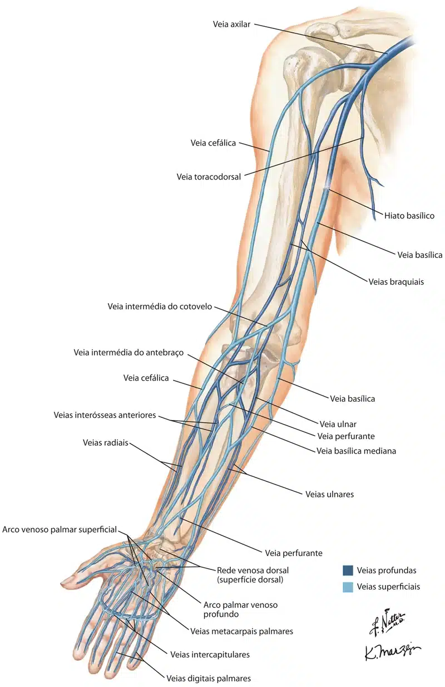

O sistema venoso do membro superior pode ser subdividido em sistema superficial e profundo.
As principais veias superficiais do membro superior são as veias cefálica e basílica.
Elas estão localizadas dentro do tecido subcutâneo do membro superior.
Origina-se da rede venosa dorsal da mão e sobe pela face medial do membro superior.
Na margem do m. redondo maior, a veia se move profundamente no braço.
Aqui, combina-se com as veias braquiais do sistema venoso profundo para formar a veia axilar .
Esta também se origina da rede venosa dorsal da mão.
Sobe pela face ântero-lateral do membro superior, passando anteriormente no cotovelo.
No ombro, a veia cefálica passa entre os músculos deltóide e peitoral maior (sulco deltopeitoral) e entra na região da axila através do trígono clavipeitoral .
Dentro da axila, a veia cefálica desemboca na veia axilar.
As veias cefálica e basílica estão conectadas no cotovelo pela veia intermédia do cotovelo.

O sistema venoso profundo do membro superior está situado abaixo da fáscia profunda.
É formado por veias pareadas, que acompanham e ficam de cada lado de uma artéria.
As veias profundas recebem o mesmo nome nome da artéria que acompanham (Ex: v. radial, v. ulnar).
As veias braquiais são as maiores em tamanho e estão situadas em ambos os lados da artéria braquial.
As pulsações da artéria braquial auxiliam o retorno venoso.
As veias assim estruturadas são conhecidas como veias comitantes.
As veias perfurantes correm entre as veias profundas e superficiais do membro superior, conectando os dois sistemas.